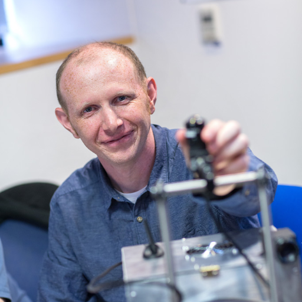
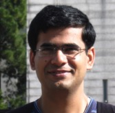
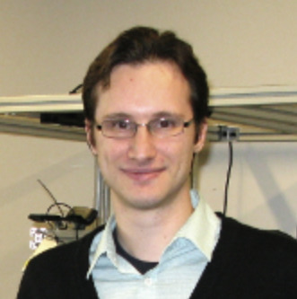

Visual Learning and Reasoning for Robotics
Full-day workshop at RSS 2021
Virtual Conference
July 13, 2021, Pacific Time (PT)
Welcome! This workshop includes three live events:
- Invited Talks (25 min talk + 5 min Q&A)
- Spotlight Talks (4 min talk + 2 min Q&A)
- Panel Discussion (60 min)
Schedule
| Time (PT) | Invited Speaker | Title |
|---|---|---|
| 10:15 - 10:30 | - |
| Video | |
| 10:30 - 11:00 |

Andrew Davison Imperial College London |
| Video | |
| 11:00 - 11:30 |

Raquel Urtasun University of Toronto / Uber |
| Video | |
| 11:30 - 12:00 |
Spotlight Talks + Q&A |
ZePHyR: Zero-shot Pose Hypothesis Rating
Brian Okorn (Carnegie Mellon University); Qiao Gu (Carnegie Mellon University)*; Martial Hebert (Carnegie Mellon University); David Held (Carnegie Mellon University) ST-DETR: Spatio-Temporal Object Traces Attention Detection Transformer Eslam Bakr (Valeo)*; Ahmad ElSallab (Valeo Deep Learning Research) Lifelong Interactive 3D Object Recognition for Real-Time Robotic Manipulation Hamed Ayoobi (University of Groningen)*; S. Hamidreza Kasaei (University of Groningen); Ming Cao (University of Groningen); Rineke Verbrugge (University of Groningen); Bart Verheij (University of Groningen) Predicting Diverse and Plausible State Foresight For Robotic Pushing Tasks Lingzhi Zhang (University of Pennsylvania)*; Shenghao Zhou (University of Pennsylvania); Jianbo Shi (University of Pennsylvania) Learning by Watching: Physical Imitation of Manipulation Skills from Human Videos Haoyu Xiong (University of Toronto, Vector Institute)*; Quanzhou Li (University of Toronto, Vector Institute); Yun-Chun Chen (University of Toronto, Vector Institute); Homanga Bharadhwaj (University of Toronto, Vector Institute); Samarth Sinha (University of Toronto, Vector Institute); Animesh Garg (University of Toronto, Vector Institute, NVIDIA) |
| 12:00 - 12:30 |
Abhinav Gupta CMU / Facebook AI Research |
| Video | |
| 12:30 - 1:00 |

Shuran Song Columbia University |
| Video | |
| 1:00 - 2:30 | - | Break |
| 2:30 - 3:00 |

Saurabh Gupta UIUC |
| Video | |
| 3:00 - 3:30 |

Sergey Levine UC Berkeley |
| Video | |
| 3:30 - 4:00 |
Spotlight Talks + Q&A |
3D Neural Scene Representations for Visuomotor Control
Yunzhu Li (MIT)*; Shuang Li (MIT); Vincent Sitzmann (MIT); Pulkit Agrawal (MIT); Antonio Torralba (MIT) Stabilizing Deep Q-Learning with ConvNets and Vision Transformers under Data Augmentation Nicklas A Hansen (UC San Diego)*; Hao Su (UC San Diego); Xiaolong Wang (UC San Diego) Learning Vision-Guided Quadrupedal Locomotion End-to-End with Cross-Modal Transformers Ruihan Yang (UC San Diego)*; Minghao Zhang (Tsinghua University); Nicklas A Hansen (UC San Diego); Huazhe Xu (UC Berkeley); Xiaolong Wang (UC San Diego) Interaction Prediction and Monte-Carlo Tree Search for Robot Manipulation in Clutter Baichuan Huang (Rutgers University)*; Abdeslam Boularias (Rutgers University); Jingjin Yu (Rutgers University) A Simple Method for Complex In-Hand Manipulation Tao Chen (MIT)*; Jie Xu (MIT); Pulkit Agrawal (MIT) |
| 4:00 - 5:00 |
Greg Dudek (Moderator) McGill University / Samsung + Invited Speakers |
| Video | |